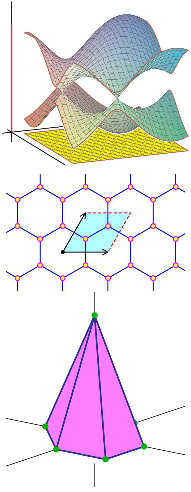

Reading List
- Slides from
talks at the ICERM workshop
- Toric Geometry and Discrete Periodic Operators,
Frank Sottile, 2022.
These are notes based on a talk by Sottile at Oberwolfach in March 2022, and written for those with a background in algebraic
geometry.
- Algebraic Fermi curves,
Chris Peters, Astérisque, tome 189–190 (1990), Séminaire
Bourbaki, exp. no 723, p. 239–258.
This is a exposition of the book of Gieseker, Knörrer, and Trubowitz.
- Matt Faust's FPSAC Extended Abstract. (Coming in November)
- Something of Lior
- Notes on Fermi Surfaces.
Notes of Stephen Shipman (under construction).
- Ibadan Lectures on Toric Varieties,
expanded version of notes from 2017 CIMPA.
Research School in Computational and Combinatorial Algebraic Geometry in Ibadan, Nigeria,
12–23 June 2017.
This is an introduction to toric varieties in several different ways that came out of a CIMPA School that Frank gave in 2017.
- Introduction to Quantum Graphs.
Gregory Berkolaiko and Peter Kuchment, Mathematical Surveys and Monographs, Vol.186, AMS, 2013.
- An
overview of periodic elliptic operators, Peter Kuchment, Bull. AMS, 53 (2016), 343–414.
| 
|